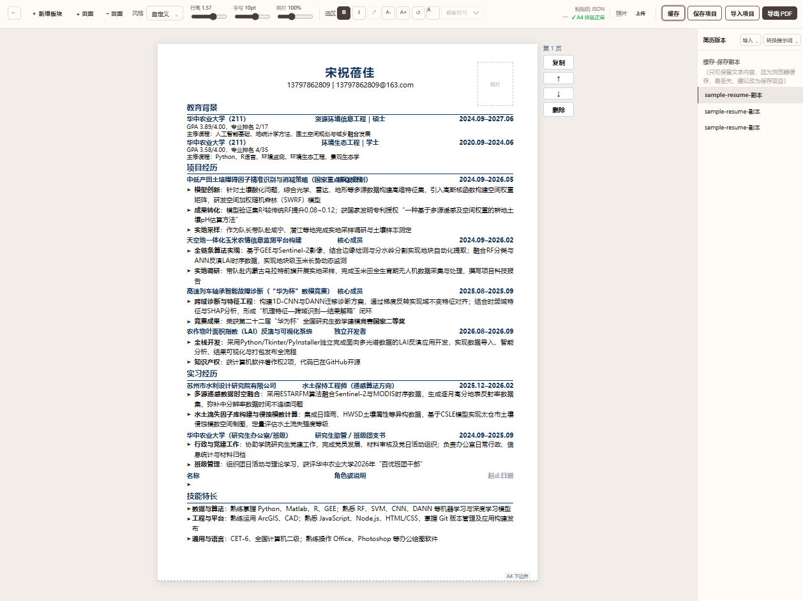
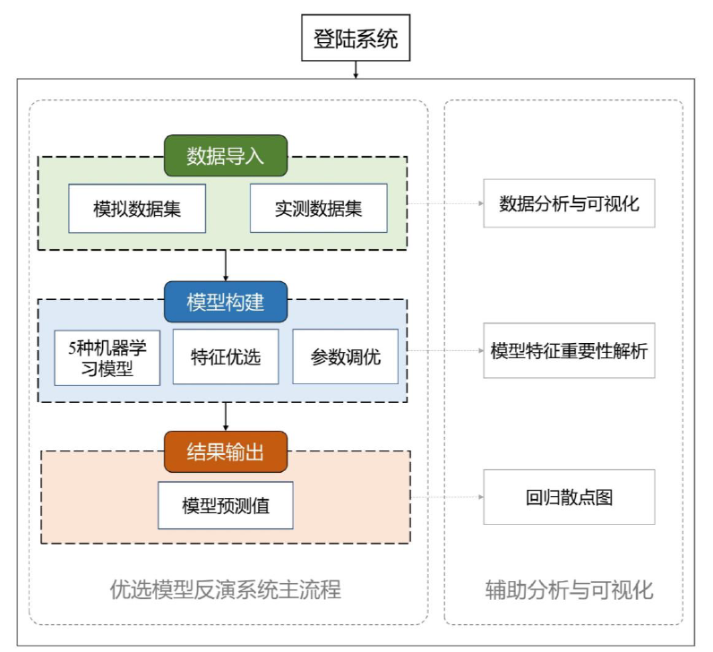

HELLO, I'M / 你好，我是
宋祝蓓佳.
SONG ZHUBEIJIA
Python｜Web前端｜无人机航测｜农业AI｜遥感算法｜GIS空间分析
懂数据、重逻辑的实干者
能带队、擅沟通的组织者
乐观开朗，勤奋积极，抗压能力强；
具有较强的统筹协调、组织沟通和公众表达能力；
具有主动思考，自主学习的能力，能较快领悟和掌握相关基础技能；
责任感强，能吃苦耐劳，具有团队精神，对待工作细致严谨，踏实认真。具备一线深度调研、解决复杂问题的能力。
01 / EDUCATION
扎根专业，持续生长.
华中农业大学 · 本硕 211
点击卡片，翻阅我的学习轨迹 ↻
02 / SELECTED PROJECTS
把复杂问题，做成可用成果.
科研 × 算法 × 独立开发
点击右侧项目书脊，展开完整经历
03 / INTERNSHIP
连接技术与业务现场.
湖南万源土地房地产评估测绘有限公司 2026.09 — 2026.11
统计口径来自提供的报告：阶段记录含公告包段拆分，项目按同站规范名称归并。
多站点自适应采集框架
Requests + BeautifulSoup/lxml 解析异构网页；定位 Vue 站点 XHR/Fetch 接口直取 JSON，请求校验失败时降级至 Playwright 渲染。
图片识别、字段标准化与项目归并
集成 PaddleOCR 提取公告文本框与坐标，检索回写字段；清洗采购、候选、成交阶段记录，保留轮次、更正、终止和来源证据。
从竞争格局，到业务开拓研判
形成项目汇总表与分析文档，围绕业务分布、采购偏好、供应商活跃度和风险信号展开分析，支持业务线索筛选与进一步核验。

DELIVERABLE / 分析成果
面向业务开拓的
国有企业集团采购市场研判报告
飞书在线文档 · 图表与分析成果
打开在线文档 →苏州市水利设计研究院有限公司 2025.12 — 2026.02
水土保持工程师 · 遥感算法方向
参与《太仓市2025年度水土流失动态监测》《金港镇2025年度水土流失动态监测成果报告》项目：
技术栈：Sentinel-2 / MODIS / HWSD / ArcGIS / Google Earth Engine / CSLE模型 / 多源遥感数据融合 / 空间制图
项目成果：完成多源数据时空融合—水土流失因子库构建—侵蚀模数计算全流程监测报告。融合多源遥感时序数据，弥补中分辨率数据时间不连续问题；集成日降雨、土壤属性等多源异构数据，构建因子空间数据库；实现太仓市土壤侵蚀模数空间制图。
04 / MORE ABOUT ME
经历有据，热爱有迹.
简历 · 作品 · 证书 · 研究成果
我的完整简历 ↗
教育、项目、技能与实践
PDF 原件，点击查看
证书与成果档案 ↗
数学建模竞赛 · 软件著作权
论文 · 学业荣誉 · 无人机培训
简历智能排版工作台 ↗

04 / INDEPENDENT WORK农作物叶面积指数（LAI）反演与可视化系统 ↗

BEYOND THE CODE
专业能力，支撑每一次交付。
中共党员 · 湖北天门 · 2002.11
研究与表达
《遥感学报》论文第二作者（导师一作）；Computers and Electronics in Agriculture 第一作者论文在投。
工作之外
羽毛球 / 乒乓球 / 游泳 / 绘画
技能证书
CET-4 · CET-6 · 计算机二级证书 · 普通话一级乙等
专业技能：熟练使用 ArcGIS、QGIS、eCognition Developer、ENVI 等 GIS 软件；AutoCAD、Origin 绘图软件；GEE 云计算平台、Metashape、DJITerra 等遥感相关工具；掌握无人机及卫星搭载的多种传感器遥感数据的获取、处理、分析和应用；熟练操作无人机，具备野外作业适应能力，掌握 RTK 精准定位技术、航线规划、处理点云数据与航拍影像。
编程语言：掌握 Python、C++、Matlab、R、JavaScript 编程语言。具备模块化开发、GUI交互、业务逻辑设计、数据读写、状态管理及模型接口封装能力。熟练使用 Pandas、Gdal、NumPy、OpenPyXL 等进行批量处理和自动化输出。
算法建模与可视化：掌握常用机器学习和图像分割算法，建立模型进行数据挖掘分析。熟悉 RF、SVR、MLP、GBDT、神经网络、Transformer、Matplotlib、SHAP 等，掌握特征工程、交叉验证、参数调优、模型评估及特征贡献分析。
工程化与部署：熟悉 PyInstaller、JavaScript、Node.js、HTML/CSS、Conda/venv 环境管理、Git 版本控制。
AI：熟练使用 Codex、飞书、影刀 RPA 等工具，掌握 AI Coding。